| Lv02_0001 |
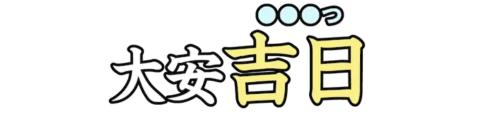 |
きちじつ、きつじつ |
物事を行うのに、最も縁起が良いとされる日。 |
| Lv02_0002 |
|
こころにく |
憎らしく思われるほど、言動などがすぐれているさま。 |
| Lv02_0003 |
|
とぼ |
十分でない。足りない。経済的に貧しい。 |
| Lv02_0004 |
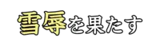 |
せつじょく |
辱を除きさり物事を成し遂げる。『屈辱を晴らす』との混同に注意。 |
| Lv02_0005 |
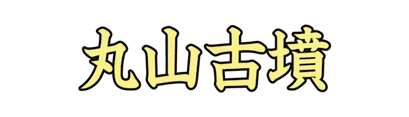 |
まるやまこふん |
奈良県橿原市見瀬町、五条野町、大軽町にある前方後円墳。 |
| Lv02_0006 |
|
かいこ |
チョウ目カイコガ科の昆虫。品種改良を重ねて家畜化した種。 |
| Lv02_0007 |
|
じょうかまち |
城郭の下に発展した町。 |
| Lv02_0008 |
|
こくもつ |
人間がその種子などを常食とする農作物。 |
| Lv02_0009 |
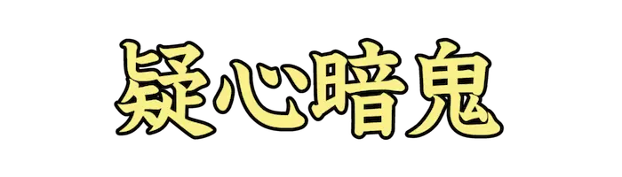 |
ぎしんあんき |
一度疑い始めると、何から何まで恐ろしくなってしまい、疑うのをやめなくなること。 |
| Lv02_0010 |
|
はいたてき |
特定の人間や組織、主義主張だけを優遇し、他を退けるような考え方。 |
| Lv02_0011 |
|
とどこお |
物事が順調に運ばない。はかどらない。流れがとまる。停滞する。 |
| Lv02_0012 |
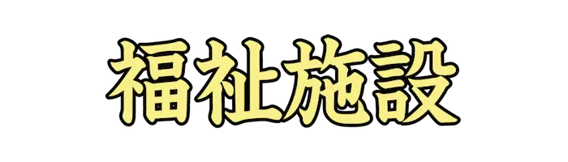 |
ふくししせつ |
社会福祉のためにつくられた施設のこと。 |
| Lv02_0013 |
|
そうがんきょう |
二個の望遠鏡の光軸を平行に並べ、遠方の物体を拡大し立体的に見る光学機器。 |
| Lv02_0014 |
|
じょうまん |
表現に締まりがなくてむだが多いこと。 |
| Lv02_0015 |
|
またぎ |
他の人から間接的に聞くこと。 |
| Lv02_0016 |
|
いりゅう |
所持品などを置き忘れること。また、死後に残すこと。 |
| Lv02_0017 |
|
だんかいせだい |
『団塊の世代』とも。戦後の第一次ベビーブームに生まれた世代。 |
| Lv02_0018 |
|
じゃまだ |
わざと邪魔をすること。 |
| Lv02_0019 |
|
くじら |
哺乳類のクジラ目、あるいは鯨凹歯類に属する水生動物の総称。 |
| Lv02_0020 |
|
せんざいのうりょく |
表には現れず内側に潜んでいる能力のこと。 |
| Lv02_0021 |
|
かいせき |
茶の湯会の主催者である亭主が、来客をもてなす料理。 |
| Lv02_0022 |
|
しゅんぎく |
キク科の植物。鍋料理などによく利用される。 |
| Lv02_0023 |
|
くわだ |
計画を立てる。計画を試みる。 |
| Lv02_0024 |
|
けいぼ |
うやまいしたうこと。 |
| Lv02_0025 |
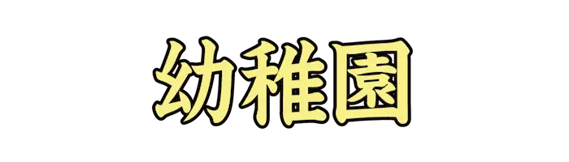 |
ようちえん |
幼児を保育し、その心身を成長、発達させるための教育を行う事業所。 |
| Lv02_0026 |
|
きもだめ |
人が恐れる場所に行かせるなどして、度胸があるかどうかを試すこと。 |
| Lv02_0027 |
|
ごしょう |
心をこめて物事にはげむこと。また、物を大切にすること。 |
| Lv02_0028 |
|
なんくせ |
無理に見つけてきた非難すべき悪い点。 |
| Lv02_0029 |
|
うすぎ |
寒いときでも衣服を何枚も着込まないこと。 |
| Lv02_0030 |
|
がろう |
美術品を陳列、展示する場所。また、画商の店。 |
| Lv02_0031 |
|
けっとう |
個人間で起こった争いを解決するため、取り決めた方法で闘い、勝負をつけること。 |
| Lv02_0032 |
|
かんむりょう |
感慨がはかりしれないほど大きいさま。何もいえないほど深く感じいるさま。 |
| Lv02_0033 |
|
せきらら |
包み隠さないこと。むき出しであること。『赤裸(せきら)』を強調した語。 |
| Lv02_0034 |
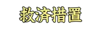 |
きゅうさいそち |
相手が不利益を被る状況にならないよう、挽回のチャンスとして与える手段のこと。 |
| Lv02_0035 |
|
なだれ |
山の斜面に積もった大量の雪が、急激にくずれ落ちる現象。 |
| Lv02_0036 |
|
はなむこ |
結婚したばかりの男性。 |
| Lv02_0037 |
|
けづくろ |
毛の生えた生物が、舌やつめなどを使って毛並みを整えること。 |
| Lv02_0038 |
|
じょうまえ |
戸やふたなど、開けたてする所につけて、他人が勝手に開けられないようにする金具。 |
| Lv02_0039 |
|
おそれざん、おそれやま |
下北半島の中央部に位置する活火山。日本三大霊場の恐山菩提寺がある。 |
| Lv02_0040 |
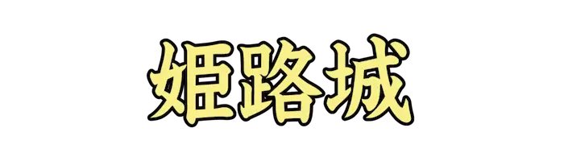 |
ひめじじょう |
兵庫県姫路市にある日本の城。 |
| Lv02_0041 |
|
た、しだ |
ひと続きのものの端が、力なく下がる。また、細い枝などが、長くたれ下がる。 |
| Lv02_0042 |
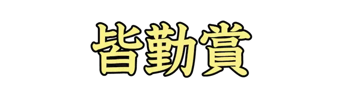 |
かいきんしょう |
学校や職場などで、一度も休まずに出席をした者に与えられる賞。 |
| Lv02_0043 |
|
らん |
ウェブ上のサービスで特定の投稿に対してコメントを残せる入力、表示欄。 |
| Lv02_0044 |
|
しょうきゅうし |
少し休むこと。こやすみ。小休。 |
| Lv02_0045 |
|
ぎきょく |
演劇の上演のため執筆された脚本や、上演台本のかたちで執筆された文学作品。 |
| Lv02_0046 |
|
むてんか |
特定の物質が使用されていないことを表す表現。 |
| Lv02_0047 |
|
しばち |
芝の生えている所。 芝生。 |
| Lv02_0048 |
|
しわざ |
したこと。行為。所業。 |
| Lv02_0049 |
|
ひってき |
能力や価値などが同程度であること。また、肩を並べること。 |
| Lv02_0050 |
|
はばと |
陸上競技の跳躍競技のうち、立ち幅跳び、走り幅跳びのこと。 |
| Lv02_0051 |
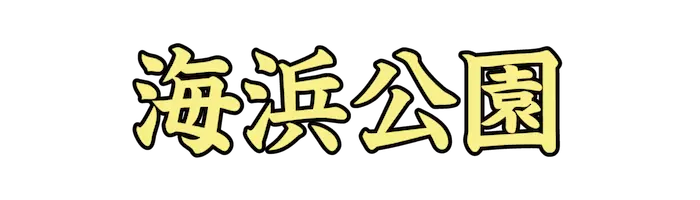 |
かいひんこうえん |
海辺での自然体験などを目的に造られた自然公園の総称。 |
| Lv02_0052 |
|
ぞうとうひん |
年中行事や、結婚などの特別な出来事の際に贈られる品物。 |
| Lv02_0053 |
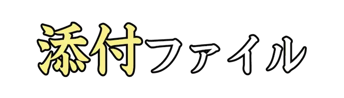 |
てんぷ |
電子メールに添付して送信されるファイル。 |
| Lv02_0054 |
|
つまさき |
足の指の先。 |
| Lv02_0055 |
|
むさくい |
作為がないこと。偶然にまかせること。 |
| Lv02_0056 |
|
おだく、おじょく |
汚れ濁ること。 |
| Lv02_0057 |
|
すんげき |
ごく短い簡単な劇。 |
| Lv02_0058 |
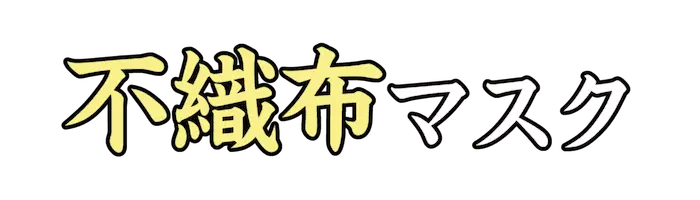 |
ふしょくふ |
繊維を織らずに、ランダムに絡み合わせた布で作ったマスク。 |
| Lv02_0059 |
|
いまし |
まちがいをしないように前もって注意する。同じ過ちを犯さないようにしかる。 |
| Lv02_0060 |
|
く |
腐って形が崩れたりぼろぼろになる。評判が衰えてしまう。すたれる。 |
| Lv02_0061 |
|
かんげい |
好意をもってよろこび迎えること。 |
| Lv02_0062 |
|
のきな |
家が軒を連ねて並び建っていること。また、どこもかしこも。 |
| Lv02_0063 |
|
つか |
目上の人が目下の者に対して人などを行かせる。派遣する。 |
| Lv02_0064 |
 |
こじ |
誇らしげに示すこと。また、得意になって見せること。 |
| Lv02_0065 |
|
かんせいとう |
空港や空港周辺、飛行場に設置される航空交通管制を行う施設。 |
| Lv02_0066 |
|
さか |
勢いがいいさま。また、人が最も元気な時期にあるさま。 |
| Lv02_0067 |
|
こうじょうせい |
生物の生理状態などが一定するように調節される性質。 |
| Lv02_0068 |
|
こうしんりょう |
飲食物に香気や辛味を添えて風味を増す種子や果実、葉、根など。 |
| Lv02_0069 |
|
げんこう |
印刷公表するもののもとになる文章や書画、写真など。 |
| Lv02_0070 |
|
れんさはんのう |
一つの出来事がきっかけとなり、同種のことが次々に起こること。 |
| Lv02_0071 |
|
おそざ |
同類のものより時期が遅れて花が咲くこと。また、世に出るのに時間のかかった人。 |
| Lv02_0072 |
|
うかが |
訪れる。尋ねる。聞く。また、物事の状態をさぐる。 |
| Lv02_0073 |
|
しゃよう |
新興に圧倒され、次第に没落していくこと。 |
| Lv02_0074 |
|
ちゅうしゃく |
語句の意味や用法を解説したり、補足的な説明を加えたりすること。 |
| Lv02_0075 |
|
しっこう |
とり行なうこと。実行すること。 |
| Lv02_0076 |
|
じょうしゅ |
しみじみと落ち着いた気分やおもむき。 |
| Lv02_0077 |
|
たた |
広げてある物を折り返して重ねる。折って小さくまとめる。 |
| Lv02_0078 |
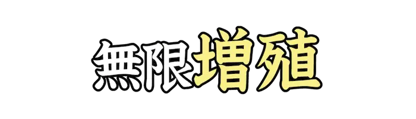 |
ぞうしょく |
コンピュータゲームで、自機やアイテムを無数に増加させるテクニックの総称。 |
| Lv02_0079 |
|
むじんぞう |
底が尽きないほど、たくさんあること。 |
| Lv02_0080 |
|
たきぎ、まき |
燃料にする細い枝や割り木。 |
| Lv02_0081 |
|
いた |
ある目的地、場所に行き着く。到達する。広い範囲に及ぶ。行きわたる。 |
| Lv02_0082 |
|
しゃそう |
列車や電車、自動車などの窓。 |
| Lv02_0083 |
|
あやま |
正しくないこと。まちがい。やりそこない。失敗。 |
| Lv02_0084 |
|
じんぎ |
道徳上守るべき筋道。他人に対して欠かせない礼儀上の務め。 |
| Lv02_0085 |
|
のぞ |
風景や場所などを目の前にする。向かい対する。 |
| Lv02_0086 |
 |
かみふぶき |
祝賀や歓迎の気持ちを表すために、色紙などを細かく切ってまき散らすもの。 |
| Lv02_0087 |
|
うつわ |
物を入れるもの。入れ物。容器。また、人物や能力などの大きさ。器量。 |
| Lv02_0088 |
|
ゆうが |
しとやかで気品があること。 |
| Lv02_0089 |
|
たず |
所在のわからないものなどをさがし求める。おおもとなどを明らかにしようと調べる。 |
| Lv02_0090 |
|
むじゅん |
二つの物事の筋道が合わないこと。 |
| Lv02_0091 |
|
ちんもく |
だまりこむこと。口をきかないこと。 |
| Lv02_0092 |
|
じひび |
重い物が落ちたり動いたりしたときの音や震動が、地面を伝わって響いてくること。 |
| Lv02_0093 |
|
おおぶね、おおふね |
大きな船。 |
| Lv02_0094 |
|
いわかん |
物事になじめないさま。居心地が悪いさま。 |
| Lv02_0095 |
|
かんげん |
人の気に入るような口先だけのうまい言葉。 |
| Lv02_0096 |
|
せいぼ |
年の暮れに、お世話になった人に対して感謝の気持ちを込めて渡す贈り物。 |
| Lv02_0097 |
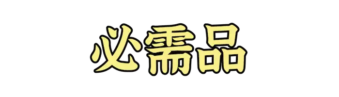 |
ひつじゅひん |
なくてはならない品物。 |
| Lv02_0098 |
|
かいそう |
建物などの外観や設備、または装備や包装を改めること。 |
| Lv02_0099 |
|
あわ |
色や味などが際立たず、薄い。形や光などがぼんやりしている。 |
| Lv02_0100 |
|
かとき |
物事が移り変わっていく途中で、まだ安定していない時期。 |
| Lv02_0101 |
|
つきぎめ |
一か月単位で賃貸される有料駐車場のこと。 |
| Lv02_0102 |
|
せきがん |
片方の目の視力、または片方の眼球が失われた状態。 |
| Lv02_0103 |
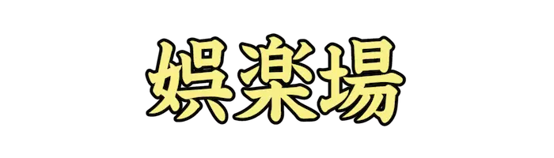 |
ごらくじょう |
娯楽を行うための場所のこと。『娯楽室(ごらくしつ)』とも。 |
| Lv02_0104 |
|
つらぬ |
つき通す。終わりまでやりぬく。 |
| Lv02_0105 |
|
じっせん |
実際の情況のもとでそれを行うこと。 |
| Lv02_0106 |
|
ぶんぴつせん |
動物の分泌の働きをする細胞が集合して組織を形成したもの。 |
| Lv02_0107 |
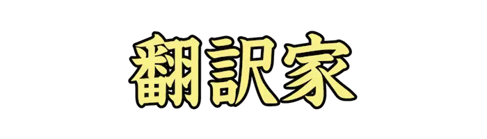 |
ほんやくか |
外国語で表現された文章や言葉などを特定の言語に訳す職業。 |
| Lv02_0108 |
|
あわた、あわだ |
食材を泡立てたり混ぜ合わせるときに使う調理器具。 |
| Lv02_0109 |
|
いっきう |
戦場で、戦士同士が一対一を原則として決着をつける戦闘手法。 |
| Lv02_0110 |
|
へだ |
かけ離れていること。 |
| Lv02_0111 |
|
せりふ、だいし |
俳優が劇中の人物として言う言葉。転じて、言い分や言いぐさのこと。 |
| Lv02_0112 |
|
さ |
切り目を入れるように力を加え離す。また、一部を分けて他の用に供する。 |
| Lv02_0113 |
|
なむさん |
『南無三宝(なむさんぼう)』のこと。驚いたときや失敗したときに発する言葉。 |
| Lv02_0114 |
|
ちばな |
乳児が通常の食物を摂れるようになり、乳を飲まなくなること。 |
| Lv02_0115 |
|
きそん、きぞん |
既にあること。 |
| Lv02_0116 |
|
こわいろ、せいしょく |
物を言うときの声と顔色。 |
| Lv02_0117 |
|
むずか、むつか |
理解や習得がしにくい。また、複雑でわかりにくい。 |
| Lv02_0118 |
|
しゅうねん、しゅうねい |
執着して離れない心。物事にとらわれた心。 |
| Lv02_0119 |
 |
しょうき |
亜酸化窒素のこと。不安や痛みの軽減のため歯科治療、出産時などに用いられている。 |
| Lv02_0120 |
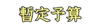 |
ざんていよさん |
年度開始までに本予算が成立しない場合、本予算成立まで繋ぐための予算のこと。 |
| Lv02_0121 |
|
さんみいったい |
三つの別々のものが緊密に結びつくこと。また、三者が心を合わせて一つになること。 |
| Lv02_0122 |
|
めんたいこ |
たらこを唐辛子に漬けて熟成したもの。『辛子明太子(からしめんたいこ)』とも。 |
| Lv02_0123 |
|
つなひ |
二つのチームが一本の綱をお互いの陣地に向けて引き合い、その優劣を競う競技。 |
| Lv02_0124 |
|
かんぶ |
病気や傷のある部分。 |
| Lv02_0125 |
|
ぞうすい |
飯に魚貝や野菜などを加え、醤油味や味噌味の汁で粥状に煮たもの。 |
| Lv02_0126 |
 |
だいじん |
政務を執り行なう高官。重要な臣下。 |
| Lv02_0127 |
|
ゆくえ |
行くべき方向。向かっていく先。 |
| Lv02_0128 |
|
まじめ |
うそやいいかげんなところがなく、真剣であること。本気であること。 |
| Lv02_0129 |
|
ずし |
海苔や薄焼き玉子、板状にしたとろろ昆布で具を芯にして鮨飯を巻いたもの。 |
| Lv02_0130 |
|
ざこ、じゃこ |
いろいろな種類の入り交じった小魚。また、小さい魚。 |
| Lv02_0131 |
|
おとめ |
年の若い女。また、未婚の女性。 |
| Lv02_0132 |
|
ほんこん |
中華人民共和国の南部にある特別行政区。世界有数の人口密集地域。 |
| Lv02_0133 |
|
ふんいき |
その場やそこにいる人たちが自然に作り出している気分。 |
| Lv02_0134 |
|
ころもが |
別の衣服に着替えること。特に夏冬の季節に応じて改めること。 |
| Lv02_0135 |
|
たずさ |
手に持つこと。あるいは、人の手を取ること。 |
| Lv02_0136 |
|
いろど |
色をつける。彩色する。さまざまの色や物を取り合わせて飾る。 |
| Lv02_0137 |
|
かんだか |
声の調子が高く鋭い。 |
| Lv02_0138 |
|
てんのうせい |
太陽系の第七惑星。ウラヌス。主にガスと多様な氷から作られる。 |
| Lv02_0139 |
|
ようしゃ |
失敗や過失などを許すこと。 |
| Lv02_0140 |
|
ぬ |
糸を通した針を布地などの裏表に交互に刺して進める。 |
| Lv02_0141 |
|
さそ |
一緒に行動するようにすすめる。好ましくない状況などに引き入れる。 |
| Lv02_0142 |
|
ちっそく |
息がつまること。呼吸ができなくなること。 |
| Lv02_0143 |
|
しっつい |
名誉や権威などを失うこと。 |
| Lv02_0144 |
|
たくえつ |
群をぬいてすぐれていること。 |
| Lv02_0145 |
|
ほうこうざい |
芳香があって気分をさわやかにする薬剤。 |
| Lv02_0146 |
|
もとじ |
金銭の勘定や仕事の全体を締めくくること。また、博徒が親分を呼ぶときの語。 |
| Lv02_0147 |
|
きょえいしん |
自分を実質以上に見せようと、みえを張りたがる心。 |
| Lv02_0148 |
|
かいこん |
山野を切り開いて農耕ができる田畑にすること。 |
| Lv02_0149 |
|
あや |
不思議な力がある。神秘的な感じがする。行動や状況が不審である。疑わしい。 |
| Lv02_0150 |
|
か |
高い所からぶらさげる。上から下にさげる。またぐように渡す。かけわたす。 |
| Lv02_0151 |
|
ろうひ |
金銭や時間、精力などをむだに使うこと。むだづかい。 |
| Lv02_0152 |
|
はいけい |
手紙の初めに書くあいさつの語。 |
| Lv02_0153 |
|
ろうでん |
配電の不備や電線の絶縁不良により、電流が回路以外にもれて流れること。 |
| Lv02_0154 |
|
くや |
物事が思うとおりにいかなかったりして、腹立たしい気持ちである。 |
| Lv02_0155 |
|
きんぱく |
状況などが、非常に差し迫っていること。 |
| Lv02_0156 |
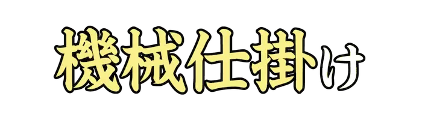 |
きかいじか |
機械を用いて動かされる仕組みや、それが使われたもの。 |
| Lv02_0157 |
|
たいのうきん |
定められた期限を過ぎても納めないお金のこと。 |
| Lv02_0158 |
|
せの |
つま先立って伸び上がること。また、実力以上の物事をしようとすること。 |
| Lv02_0159 |
|
そくばく |
まとめてしばること。しばり捕らえること。制限を加えて行動の自由を奪うこと。 |
| Lv02_0160 |
|
はめつ |
ほろびること。人格や家、国家などが成り立たなくなること。 |
| Lv02_0161 |
|
けんめい |
かしこくて、物事の判断が適切であること。 |
| Lv02_0162 |
|
てんぷく |
列車、船などがひっくり返ること。また、ひっくり返すこと。 |
| Lv02_0163 |
|
さいほう |
布地を裁って衣服などに縫いあげること。針仕事。 |
| Lv02_0164 |
|
きょうぼう |
二人以上の者が合意して悪事などをたくらむこと。 |
| Lv02_0165 |
|
せっぱん |
半分にして、分けること。 |
| Lv02_0166 |
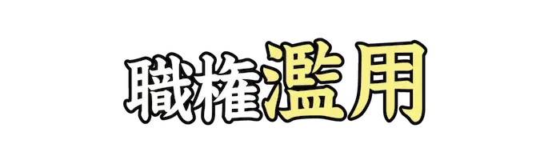 |
らんよう |
自分の地位や職務に認められた権限を正しく執行せず、自らの利害に用いること。 |
| Lv02_0167 |
|
ずいい |
『随意(ずいい)』の美化語。束縛や制限を受けないこと。 |
| Lv02_0168 |
|
ひかくてき |
一般的な基準と比べて考えてみるさま。わりあい。 |
| Lv02_0169 |
|
じゃどう |
正当でない方法。本筋から外れたやり方。 |
| Lv02_0170 |
|
しんぼう |
つらいことや苦しいことをがまんすること。 |
| Lv02_0171 |
 |
そうだつせん |
自分のものにしようとして争う戦い。 |
| Lv02_0172 |
|
いっきん |
尺貫法による重量の単位。食パンの単位としてしばしば用いられる。 |
| Lv02_0173 |
 |
ざんぎゃく |
人や生き物に対してする、行為のむごたらしいこと。 |
| Lv02_0174 |
|
しゅくえん |
祝いの宴会。賀宴。 |
| Lv02_0175 |
|
かんつう |
ある物の中を貫いて通ること。また、広く物事に通じていること。 |
| Lv02_0176 |
|
きび |
近親者の死のため、勤めや学校を休んで喪に服すること。 |
| Lv02_0177 |
|
びこう |
鼻のあな。 |
| Lv02_0178 |
|
あざむ |
言葉巧みにうそを言って、相手に本当だと思わせる。 |
| Lv02_0179 |
|
ぜん |
善い行いはためらわずに、すぐに実行したほうが良いということ。 |
| Lv02_0180 |
|
ちょうこくとう |
彫刻に用いる小刀。用途に応じて、刃形や形体に種々のものがある。 |
| Lv02_0181 |
|
ちゅうしょうが |
事物の写実的な再現ではなく、点、線、面、色彩のもつ表現を追求した非具象的な絵画。 |
| Lv02_0182 |
|
ちょうえつ、ちょうおつ |
普通に考えられる程度のことからはるかに超えていること。 |
| Lv02_0183 |
|
しょうだく |
相手の意見や希望、要求などを聞いて、受け入れること。 |
| Lv02_0184 |
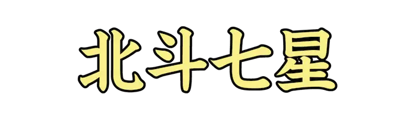 |
ほくとしちせい |
北天にある大熊座の七つの星。ひしゃくの形に並ぶ。 |
| Lv02_0185 |
 |
たいまん |
当然しなければならないことをしないこと。なまけて、おろそかにすること。 |
| Lv02_0186 |
|
じど |
カメラなどで自分の写真を撮影すること。『自分撮(じぶんど)り』とも。 |
| Lv02_0187 |
|
そうぎ |
死者をほうむる儀式。葬式。とむらい。 |
| Lv02_0188 |
|
だいたん |
度胸がすわっていること。また、図太いこと。ずうずうしいこと。 |
| Lv02_0189 |
|
てつがくしゃ |
哲学を研究する学者。 |
| Lv02_0190 |
|
とうけつ |
凍りつくこと。凍らせること。氷結。また、SNS上でアカウントを停止すること。 |
| Lv02_0191 |
|
てんねんとう |
痘瘡ウイルスの感染によって起こる悪性の伝染病。『痘瘡(とうそう)』とも。 |
| Lv02_0192 |
|
おだ |
静かでのどかなさま。安らか。 |
| Lv02_0193 |
|
にくかい、にっかい |
肉のかたまり。また、肉体。 |
| Lv02_0194 |
|
うるお、うる |
ほどよい水分を帯びる。水分が行き渡る。また、豊かになる。ゆとりができる。 |
| Lv02_0195 |
|
おうしゅう |
『欧羅巴州』の略称。ヨーロッパのこと。 |
| Lv02_0196 |
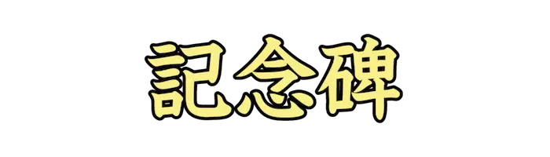 |
きねんひ |
ある出来事や人の功績などを記念して建てる碑。モニュメント。 |
| Lv02_0197 |
|
ひくつ |
いじけて、必要以上に自分をいやしめること。 |
| Lv02_0198 |
|
せいこう |
仕組みが細かくよくできていること。 |
| Lv02_0199 |
|
ろうばしん |
必要以上に世話をやこうとする気持ちを、へりくだっていう語。 |
| Lv02_0200 |
|
さくらん |
入り乱れて秩序がなくなること。ごちゃごちゃになること。 |
| Lv02_0201 |
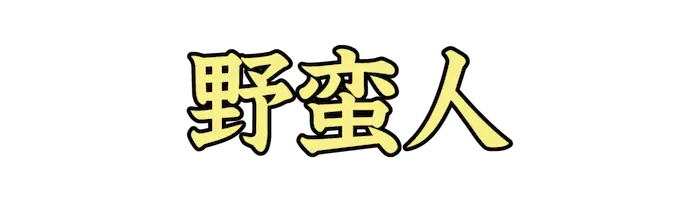 |
やばんじん |
未開人。蛮人。粗野で教養がない人。不作法で粗暴な人。 |
| Lv02_0202 |
|
おろ |
他者から購入した商品を、性質や形状を変えずに、他の事業者に販売すること。 |
| Lv02_0203 |
|
すいぼくが |
おもに墨の濃淡を利用して描いた絵画。 |
| Lv02_0204 |
 |
さいそく |
物事を早く済ませるように急かすさま。 |
| Lv02_0205 |
|
げきれい |
はげまして、奮い立たせること。 |
| Lv02_0206 |
 |
ざんじ |
少しの間。しばらく。 |
| Lv02_0207 |
|
ぼうがい |
邪魔をすること。 |
| Lv02_0208 |
|
し |
手やひもなどで強く押さえつけたり、巻きつけたりする。 |
| Lv02_0209 |
|
はな |
花が開いたように、明るく人目を引きつけるさま。 |
| Lv02_0210 |
|
りれき |
ある人が現在までに経てきた学業などの経歴。来歴。 |
| Lv02_0211 |
|
こうそ |
生体内のほとんどの化学反応の触媒になる、たんぱく質を主体とする高分子化合物。 |
| Lv02_0212 |
 |
しょうこん |
商売をうまくやり、儲けようとする気構え。 |
| Lv02_0213 |
|
しょうかん |
人を呼び出すこと。 |
| Lv02_0214 |
|
りょうし |
狩猟を職業とする人。かりゅうど。 |
| Lv02_0215 |
|
しょぐう |
人をある立場から評価して、それに相応した取り扱いをすること。 |
| Lv02_0216 |
|
ぼっとう |
一つの事に熱中して他を顧みないこと。 |
| Lv02_0217 |
|
とうごく |
牢や監獄に入れること。 |
| Lv02_0218 |
|
かしつき |
室内の乾燥を防ぎ湿度を保つための、水を水蒸気にして噴き出す電気器具。 |
| Lv02_0219 |
|
せぶ |
物事を始める前に試してみること。川を渡るとき、予め水の深さを測ること。 |
| Lv02_0220 |
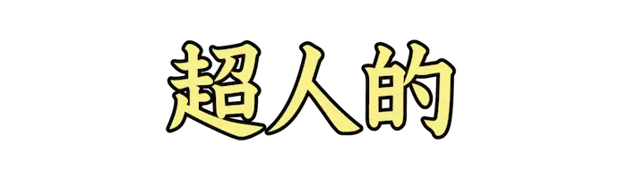 |
ちょうじんてき |
並み外れた能力をもっているさま。 |
| Lv02_0221 |
|
じゃっかん |
年が若いこと。 |
| Lv02_0222 |
|
ふたござ |
黄道十二星座のひとつ。現在、夏至点がある。 |
| Lv02_0223 |
 |
ちんつうざい |
痛みを取り除いたり、または軽減するために用いる医薬品。 |
| Lv02_0224 |
|
いんねん |
以前からの関係。ゆかり。また、言いがかり。 |
| Lv02_0225 |
|
たいざい |
よそに行って、ある期間そこに留まること。 |
| Lv02_0226 |
|
ようとんじょう |
家畜として豚を飼育するための施設。 |
| Lv02_0227 |
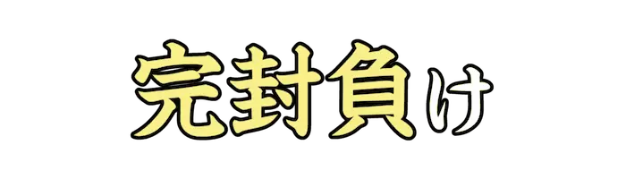 |
かんぷうま |
野球の試合で、自分のチームの打線が無得点に封じられて負けること。 |
| Lv02_0228 |
|
こくめい |
細かいところまで念を入れて手落ちのないこと。 |
| Lv02_0229 |
|
おおゆ |
強い衝撃などによって揺れ動くこと。また、大勢の人が混乱した状況のこと。 |
| Lv02_0230 |
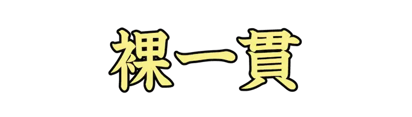 |
はだかいっかん |
自分のからだ以外、資本となるものを何も持たないこと。 |
| Lv02_0231 |
|
ほうがく |
洋楽に対して、日本の伝統的スタイルに基づく音楽の総称。 |
| Lv02_0232 |
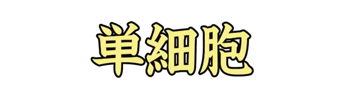 |
たんさいぼう |
単一の細胞。また、考え方が一面的で単純な人。 |
| Lv02_0233 |
|
さいたく |
いくつかあるものの中から選んで取り上げること。 |
| Lv02_0234 |
 |
みわく |
人の心をひきつけ、理性を失わせること。 |
| Lv02_0235 |
|
ねば |
柔らかで、よく物にくっつく。また、よく伸びてちぎれにくい状態にある。 |
| Lv02_0236 |
|
ふく |
物が内からの力で丸みをもって大きくなる。考えや希望が広がって大きくなる。 |
| Lv02_0237 |
|
あ |
多すぎたり、同じことが長く続いたりしていやになる。 |
| Lv02_0238 |
|
ぼくちく |
馬や牛、羊などの家畜を飼育して繁殖させること。 |
| Lv02_0239 |
|
おど |
相手を恐れさせる。脅迫する。 |
| Lv02_0240 |
|
ようご、おうご |
侵害や危害から、かばい守ること。また、仏語で、衆生を仏が守り助けること。 |
| Lv02_0241 |
|
ひょうはく |
流れただようこと。所を定めずさまよい歩くこと。 |
| Lv02_0242 |
|
さんぼうちょう |
高級指揮官の幕僚の長。主として師団以上の司令部で幕僚の業務を指揮監督する。 |
| Lv02_0243 |
|
しょめい |
本人が自分の名を書類などに書くこと。 |
| Lv02_0244 |
|
ふごう |
事物の検索、指示のためにつけておく、簡単な文字や図形。 |
| Lv02_0245 |
|
れんかばん |
付加的機能や装飾などを削減するなどしてコストを抑え、購入しやすくしたもの。 |
| Lv02_0246 |
|
あ |
無理をして。承知の上で。必ずしも。 |
| Lv02_0247 |
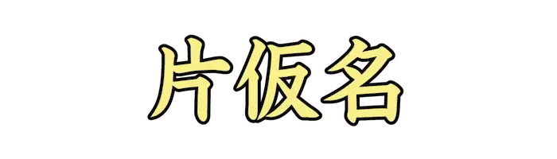 |
まぎ |
入りまじって区別がつかなくなる。他に心が移って、悲しみなどを忘れる。 |
| Lv02_0248 |
|
どうはんしゃ |
同伴する人。連れ。 |
| Lv02_0249 |
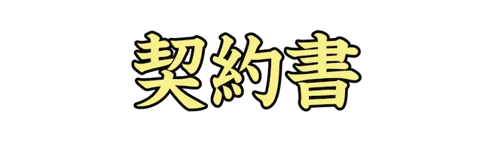 |
けいやくしょ |
本人が自分の名を書類などに書くこと。 |
| Lv02_0250 |
|
ただよ |
空中、水面などに浮かんで揺れ動く。一つ所にとどまらずゆらゆら動いている。 |
| Lv02_0251 |
|
しこうせい |
前方向からの音に対してだけ感度の良いマイクロホン。 |
| Lv02_0252 |
|
ぼうこく |
国名をあえて明示しない場合の代替の表現。 |
| Lv02_0253 |
|
しゅうかん |
監獄に収容すること。 |
| Lv02_0254 |
|
くどう |
自動車などの駆動方法のひとつ。前後四輪とも駆動する構造。4WD。 |
| Lv02_0255 |
|
ふくへい |
敵の不意を襲うため待ち伏せしている軍勢。 |
| Lv02_0256 |
|
じんとう、じんがしら |
軍の先頭。戦う部隊の真っ先。また、軍勢の統率者。 |
| Lv02_0257 |
|
じんじょう |
特別でなく、普通であること。 |
| Lv02_0258 |
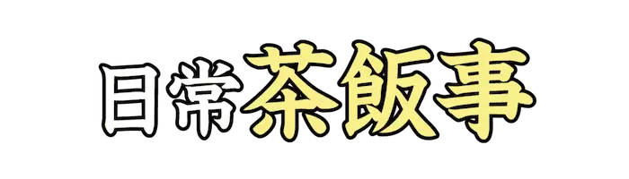 |
さはんじ |
毎日のありふれた事柄。 |
| Lv02_0259 |
 |
ひふ |
火を吹きおこすのに用いる道具。また、それを利用した芸。 |
| Lv02_0260 |
|
ぜにん |
人の行為や思想などを、よいと認めること。 |
| Lv02_0261 |
|
てんじょう |
部屋の上部の板を張った部分。また、ゲームでガチャの課金額の上限。 |
| Lv02_0262 |
|
えんせい |
遠方の敵を征伐しにいくこと。試合、探検などで遠方へ出かけていくこと。 |
| Lv02_0263 |
 |
あとかた |
痕跡が全くない。根拠がない。 |
| Lv02_0264 |
|
せんめい |
あざやかではっきりしているさま。 |
| Lv02_0265 |
|
うった |
物事の善悪、正邪の判定を求めて裁判所などの機関に申し出る。申し立てる。 |
| Lv02_0266 |
|
そうもん |
仏門。仏道。 |
| Lv02_0267 |
|
ぶっそう |
よくない事が起きたり起こしたりしそうな危険な感じがすること。 |
| Lv02_0268 |
|
そっきょうきょく |
即興的な気分をもつ器楽小品。アンプロンプチュ。 |
| Lv02_0269 |
|
たきぎょう |
滝に入っておこなう修行。 |
| Lv02_0270 |
|
たいきゅう |
スプリントレースに対して、はるかに長い距離、時間を走る長距離レースのこと。 |
| Lv02_0271 |
|
だいたいひん、だいがえひん |
本来想定していたも物の代わりに、同じ目的で使用する物。 |
| Lv02_0272 |
|
こうたくし |
表面に光沢をつけた洋紙。 |
| Lv02_0273 |
|
だくりゅう |
にごった水の、激しい流れ。 |
| Lv02_0274 |
|
だつぼう |
敬意を表して、かぶっている帽子をぬぐこと。 |
| Lv02_0275 |
|
たんねん |
細部まで注意を払うこと、緻密であること。 |
| Lv02_0276 |
|
にぎ |
人などが多く集まって活気のあるさま。 |
| Lv02_0277 |
|
だんろ |
火をたいて部屋を暖める炉。特に、壁に設けたもの。 |
| Lv02_0278 |
|
だんりょくせい |
物体の弾力に富む性質。 |
| Lv02_0279 |
|
ちこつ |
骨盤の一部。へそからまっすぐ下りた股のあたりに位置する骨のこと。 |
| Lv02_0280 |
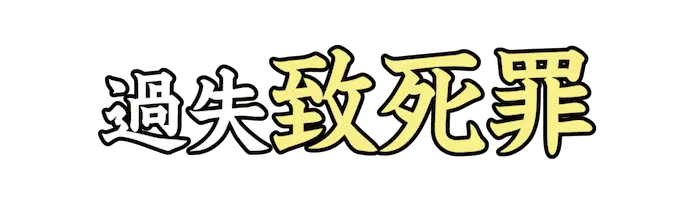 |
ちしざい |
過失により人を死亡させる罪。 |
| Lv02_0281 |
|
ちえん |
予定された期日や時間におくれること。また、長引くこと。 |
| Lv02_0282 |
|
たくわ |
金銭や品物などを、のちに役立てるために大切にためておく。 |
| Lv02_0283 |
 |
は |
勢いよくとび上がる。躍り上がる。 |
| Lv02_0284 |
|
ちょうへいせい |
国家が一定年齢の国民に兵役義務を課して強制的に軍隊に入隊させる制度。 |
| Lv02_0285 |
|
す |
液体の、濁りなどの不純物を除いて透き通った状態にする。 |
| Lv02_0286 |
|
ちんちゃく |
落ち着いていて、物事に動じないこと。 |
| Lv02_0287 |
|
めずら |
見聞きすることがまれである。普通とは違っていて目新しい。 |
| Lv02_0288 |
|
たいてい |
事柄の主要な部分。また、ほとんどすべてに及ぶさま。 |
| Lv02_0289 |
|
ていぼう |
水があふれないように、湖沼や川、池などの岸に沿って土を高く盛り上げたもの。 |
| Lv02_0290 |
|
してき |
大切な点や注意すべきこと、欠点や過失など具体的に取り上げて指し示すこと。 |
| Lv02_0291 |
|
きゅうでん |
天皇、国王などの住む御殿。また、神を祭る社殿。 |
| Lv02_0292 |
|
といき |
落胆したり、緊張がゆるんだりしたときに思わず出る息。 |
| Lv02_0293 |
 |
べっと |
今あるものとは異なる方法。別の扱い。 |
| Lv02_0294 |
|
よに |
夜の間にこっそり逃げて姿をくらますこと。 |
| Lv02_0295 |
|
そっとう |
脳貧血などにより突然意識を失って倒れること。 |
| Lv02_0296 |
 |
とうげんきょう |
俗界を離れた別世界。『理想郷(りそうきょう)』とも。 |
| Lv02_0297 |
|
ふとうめいど |
デジタル画像データで、色情報のほかに画素ごとに設けられた付加情報を表す数値。 |
| Lv02_0298 |
|
とうよう |
他人の所有物を無断で使用すること。 |
| Lv02_0299 |
|
きんじとう |
後世に永く残るすぐれた業績。また、ピラミッド。 |
| Lv02_0300 |
|
いねか |
秋に実った稲を刈り取ること。取り入れ。 |
| Lv02_0301 |
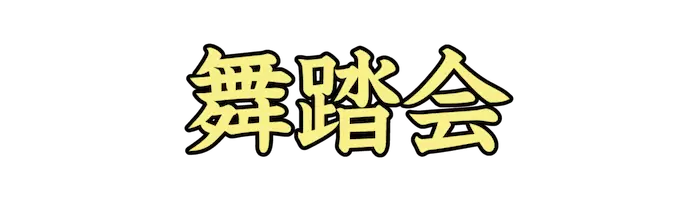 |
ぶとうかい |
社交のためのダンスを行う会。ダンスパーティー。 |
| Lv02_0302 |
|
どうまわ |
胴のまわり。また、その長さ。ウエスト。 |
| Lv02_0303 |
|
とうげ |
山道をのぼりつめて、下りにかかる所。また、物事の勢いの最も盛んな時。 |
| Lv02_0304 |
|
どんこう |
急行に対して普通列車、普通電車をいう語。 |
| Lv02_0305 |
|
のうみつ |
密度が濃くてこまやかなさま。 |
| Lv02_0306 |
|
まんぱい |
容器がいっぱいになること。また、予定した数量に達すること。 |
| Lv02_0307 |
|
はいしゅつ |
すぐれた人物が続いて世に出ること。 |
| Lv02_0308 |
 |
へんびょうし |
二～四拍子を足し算して組み合わせた拍子。また、拍子の頻繁な変化。 |
| Lv02_0309 |
|
ばくだん |
爆薬を詰め爆発させることで、人や施設を殺傷、破壊するための兵器。 |
| Lv02_0310 |
|
とうはつ |
頭部の毛髪。かみの毛。 |
| Lv02_0311 |
|
ばつぐん |
多くの中で、特にすぐれていること。程度が大きいこと。 |
| Lv02_0312 |
|
ばっそく |
ある法令のなかで、違反行為に対する刑罰または過料を科する旨を定めている規定。 |
| Lv02_0313 |
|
ぜんぱん |
物事の全体。総体。 |
| Lv02_0314 |
|
はんろ |
商品を売りさばく方面。売れ口。はけ口。 |
| Lv02_0315 |
|
うんぱん |
物品を運び移すこと。 |
| Lv02_0316 |
|
きはん |
行動や判断の基準となる模範。 |
| Lv02_0317 |
|
しげ |
草木が生長して、枝葉がたくさん生え出る。盛んに生える。 |
| Lv02_0318 |
|
きばん |
物事を成立させるための基礎となるもの。土台。 |
| Lv02_0319 |
|
ひがんばな |
ヒガンバナ科の多年草。『曼珠沙華(まんじゅしゃげ)』とも。 |
| Lv02_0320 |
|
つか |
体力や気力を消耗してその働きが衰える。くたびれる。 |
| Lv02_0321 |
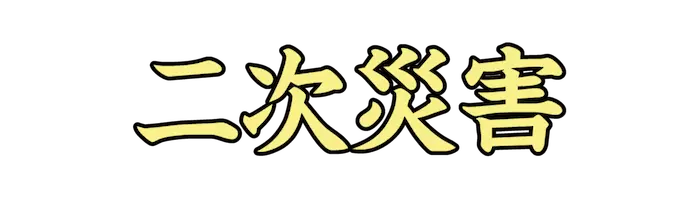 |
にじさいがい |
ある災害が起こった後に、それがもとになって起こる別の災害。 |
| Lv02_0322 |
|
ひしょち |
避暑するのに適した土地。 |
| Lv02_0323 |
|
しゅび |
始めと終わり。始めから終わりまで。終始。 |
| Lv02_0324 |
|
けいび |
被害、損害などの程度がわずかであること。 |
| Lv02_0325 |
|
びんかん |
感覚や感度の鋭いこと。 |
| Lv02_0326 |
|
ふどうひょう |
選挙で、支持する政党、候補者の一定していない有権者の票。 |
| Lv02_0327 |
|
ふはい |
有機物が微生物の作用によって分解され、有毒物質や悪臭を発生させたりすること。 |
| Lv02_0328 |
|
しきもの |
座ったり寝たりするとき、下に敷くもの。 |
| Lv02_0329 |
|
ひふ |
動物の体を覆い保護している組織。 |
| Lv02_0330 |
|
しはら |
代金、料金を払い渡す。金銭の支払いをする。 |
| Lv02_0331 |
|
てがら |
人からほめられるような立派な働き。功績。功名。 |
| Lv02_0332 |
|
へきが |
建物や洞窟内の壁、天井などに描かれた画。 |
| Lv02_0333 |
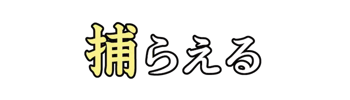 |
と |
生き物をつかまえる。捕獲する。逃げる人をとりおさえる。 |
| Lv02_0334 |
|
しにせ、ろうほ |
代々続いて同じ商売をしている格式、信用のある店。 |
| Lv02_0335 |
|
かか |
物を囲むように腕を回して持つ。自分の負担になるものをもつ。 |
| Lv02_0336 |
|
みねう |
刀のみねで相手を打つこと。『棟打(むねう)ち』とも。 |
| Lv02_0337 |
|
ほうがん |
大砲のたま。砲弾。陸上競技の砲丸投げに用いる金属球。 |
| Lv02_0338 |
|
たぼう |
非常に忙しいこと。 |
| Lv02_0339 |
|
みんよう |
民衆の、労働や儀礼などの集団の場において自然に発生し、伝承されてきた歌謡。 |
| Lv02_0340 |
|
なみだあめ |
ほんの少し降る雨。 |
| Lv02_0341 |
|
ぼんおど |
盆の期間の祭りに催される集団で踊る行事。 |
| Lv02_0342 |
|
ほこさき |
矛の切っ先。攻撃。また、攻撃の方向。 |
| Lv02_0343 |
|
しゃみせん、さみせん |
日本の弦楽器のひとつ。弦を弾いて演奏される撥弦楽器。 |
| Lv02_0344 |
|
ぎょもう |
魚介類などの捕獲に用いる網。 |
| Lv02_0345 |
|
とうよ |
投げ与えること。患者に薬を与えること。 |
| Lv02_0346 |
|
しゅよく |
航空機の翼のうち、全重量を支える揚力を発生させる大きな翼。 |
| Lv02_0347 |
|
りごう |
離れることと合わさること。また、離れたり一緒になったりすること。 |
| Lv02_0348 |
|
もくどく |
声に出さずに読むこと。 |
| Lv02_0349 |
|
しょうこうぐち |
のぼりおりするための階段のある出入り口。 |
| Lv02_0350 |
|
えいよ |
輝かしい誉れ。栄名。 |
| Lv02_0351 |
|
まんせいてき |
ある状態が長い間改善されずに持続している状態。 |
| Lv02_0352 |
|
うま |
技術や手法が優れている。 |
| Lv02_0353 |
|
ぼうとう |
文章、談話のはじめの部分。物事のはじめの部分。 |
| Lv02_0354 |
 |
むてき、きりぶえ |
濃霧などで視界不良のときに、衝突事故を防ぐため船舶や灯台などが鳴らす汽笛。 |
| Lv02_0355 |
|
らいめい、かんなり |
かみなりが鳴ること。また、その音。 |
| Lv02_0356 |
|
こめつぶ |
米の粒。 |
| Lv02_0357 |
|
しりょぶか |
深く考えを巡らせた上で判断する。配慮が行き届いている。 |
| Lv02_0358 |
|
たの |
相手に、こちらが希望するようにしてくれることを伝えて願う。 |
| Lv02_0359 |
|
こむすめ |
まだ、一人前に成長していない女。 |
| Lv02_0360 |
|
せいかてん |
野菜や果物を主に販売する店。『八百屋(やおや)』とも。 |
| Lv02_0361 |
|
ぼうかんしゃ |
傍らでただ見ているだけの者。参画しない者。 |
| Lv02_0362 |
|
ようせつぼう |
金属の溶接の際、溶接部に溶かしこんで充填するのに用いる融点の低い棒状の金属。 |
| Lv02_0363 |
|
もんしょう |
氏族、家、国、団体などのしるしとして用いる一定の図柄。 |
| Lv02_0364 |
|
いごこち |
ある場所、地位などにいるときの感じや気持ち。 |
| Lv02_0365 |
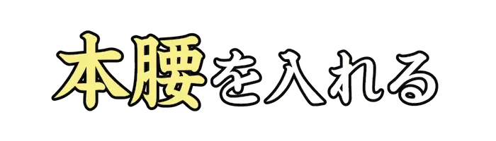 |
ほんごし |
物事を本気でしようとする姿勢。真剣な気構え。 |
| Lv02_0366 |
|
てつだ |
他人の仕事を助けて一緒に働く。手助けをする。助力する。 |
| Lv02_0367 |
 |
みゃくらく |
物事の一貫したつながり。筋道。また、血管。脈。 |
| Lv02_0368 |
|
びれい |
美しくあでやかなこと。 |
| Lv02_0369 |
|
やくどうかん |
生き生きとしていて動きがよく分かる様子や雰囲気のこと。 |
| Lv02_0370 |
|
いりょうひ |
一年間にその国の国民が保健および医療に投じた費用の合計。 |
| Lv02_0371 |
|
しんみょう、しんびょう |
人知を超えた不思議なこと。霊妙。態度がおとなしく、すなおなこと。 |
| Lv02_0372 |
|
しゅうげき |
襲いかかること。不意をついて攻めること。 |
| Lv02_0373 |
|
ひぼん |
平凡でないこと。普通より特にすぐれていること。 |
| Lv02_0374 |
|
となり |
並んで続いているもののうち、最も近くにあること。 |
| Lv02_0375 |
|
なご |
ある事柄が過ぎ去ったあとに、なおその気配や影響が残っていること。 |
| Lv02_0376 |
|
きじゅつし |
奇術を職業とする人。手品師。 |
| Lv02_0377 |
|
えもの |
漁猟でとったもの。他人から奪い取って手に入れたもの。 |
| Lv02_0378 |
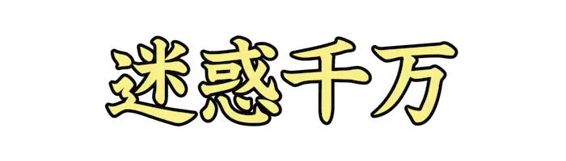 |
めいわくせんばん |
この上なく迷惑であるさま。 |
| Lv02_0379 |
|
きょまん |
非常に多い財産や金銭のこと。 |
| Lv02_0380 |
|
こういん |
月日。年月。時間。 |
| Lv02_0381 |
|
しらが |
色素がなくなったために白くなった髪。 |
| Lv02_0382 |
|
たいくつ |
することがなくて、時間をもてあますこと。 |
| Lv02_0383 |
|
かな |
漢字に基づいて作られ、用いられるようになった、日本語独特の音節文字。 |
| Lv02_0384 |
|
ひとかげ、じんえい |
物に映った人の影。人の姿。 |
| Lv02_0385 |
|
しんきじく |
今までのものとは全く違った新しい工夫。 |
| Lv02_0386 |
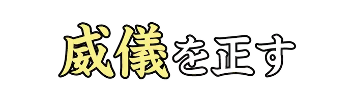 |
いぎ |
身なりを整え、おもおもしい態度をとる。『威儀を繕う』とも。 |
| Lv02_0387 |
|
ひまつぶ |
ひまな時間を過ごす手段。また、 時間をむだに過ごすこと。 |
| Lv02_0388 |
|
いく |
個数や年齢の不定、不明なときにいう語。 |
| Lv02_0389 |
|
つゆ |
六月ごろの長雨の時節。また、その時期に降る長雨。 |
| Lv02_0390 |
|
はっかん |
汗が出ること。汗を出すこと。 |
| Lv02_0391 |
|
さくじつ |
昨夜。ゆうべ。また、昨日。 |
| Lv02_0392 |
|
きょうぼう |
性質が残忍で非常に乱暴なこと。 |
| Lv02_0393 |
|
ふうが |
高尚で、みやびな趣のあること。 |
| Lv02_0394 |
 |
はこづ |
箱に詰めること。また、箱に詰めたもの。 |
| Lv02_0395 |
|
かわせ、かわし |
金銭上の債権、債務の決済や資金移動を、現金の輸送によらずに行う仕組み。 |
| Lv02_0396 |
|
ねっきょう |
非常に興奮し熱中すること。 |
| Lv02_0397 |
|
きんえん |
タバコを吸う習慣を断つこと。 |
| Lv02_0398 |
|
ろこつ |
感情などを隠さずに、ありのまま外に表すこと。 |
| Lv02_0399 |
|
けさ |
今日の朝。この朝。『今朝(こんちょう)』とも。 |
| Lv02_0400 |
|
しんろう |
結婚したばかりの男性。結婚式、披露宴などでいう。 |
| Lv02_0401 |
|
さんきゃく |
自由に伸縮できる三本の脚を備えた台。『三脚架(さんきゃくか)』とも。 |
| Lv02_0402 |
|
さしひ |
差し引くこと。特に、金銭の収支や貸借などの計算をすること。 |
| Lv02_0403 |
|
そうい |
二つのものの間にちがいがあること。 |
| Lv02_0404 |
|
か |
草木が生命を保つことができなくなる。張りやみずみずしさがなくなる。 |
| Lv02_0405 |
|
さきゅう、しゃきゅう |
風の運搬した砂が堆積してできた小さな丘。 |
| Lv02_0406 |
|
さみだれ、さつきあめ |
『梅雨(つゆ)』の別名。旧暦の五月頃に降る長雨。 |
| Lv02_0407 |
 |
か |
一つで二つ以上の働きをする。また、それをすることがむずかしい。 |
| Lv02_0408 |
|
こまき |
愛知県北西部に位置する市。『小牧・長久手の戦い』の舞台のひとつ。 |
| Lv02_0409 |
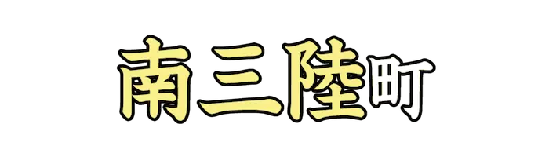 |
みなみさんりく |
宮城県北東部に位置する町。本吉郡に属する唯一の自治体。 |
| Lv02_0410 |
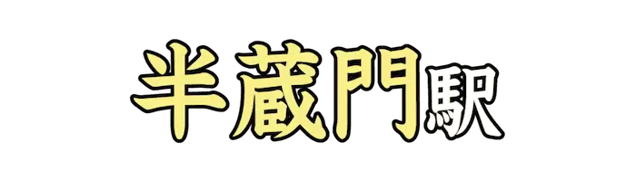 |
はんぞうもん |
東京都千代田区麹町一丁目にある、東京地下鉄半蔵門線の駅。 |
| Lv02_0411 |
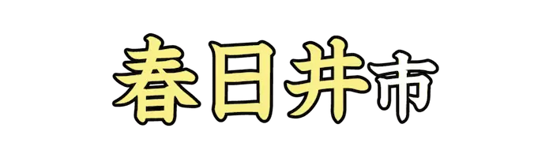 |
かすがい |
愛知県の北西部に位置する市。中枢中核都市であり、施行時特例市。 |
| Lv02_0412 |
|
こうべ |
兵庫県の南部に位置する市。兵庫県の県庁所在地及び最大の都市。 |
| Lv02_0413 |
|
くめじま |
沖縄県の島尻郡に位置する町。久米島を主要とした島郡を行政区画とする。 |
| Lv02_0414 |
|
びぜん |
岡山県の南東部にある市。備前焼の産地として知られる。 |
| Lv02_0415 |
|
いちがお |
神奈川県横浜市青葉区の地名。青葉区の行政上の中心地域となっている。 |
| Lv02_0416 |
|
かしわ |
千葉県の北西部に位置する市。中核市、業務核都市に指定されている。 |
| Lv02_0417 |
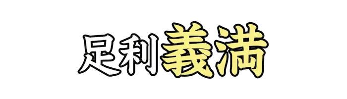 |
よしみつ |
『足利義満(あしかがよしみつ)』。室町時代前期の室町幕府第三代征夷大将軍。 |
| Lv02_0418 |
|
あつもり |
『平敦盛(たいらのあつもり)』。平安時代末期の武将。 |
| Lv02_0419 |
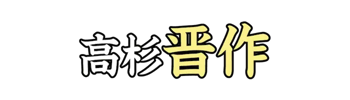 |
しんさく |
『高杉晋作(たかすぎしんさく)』。日本の政治家。 |
| Lv02_0420 |
|
つなよし |
『徳川綱吉(とくがわつなよし)』。江戸幕府の第五代征夷大将軍。 |
| Lv02_0421 |
|
じゅうじか |
木を十字に組み、罪人をはりつけにする際に用いた処刑道具。 |
| Lv02_0422 |
|
いさみ |
『近藤勇(こんどういさみ)』。江戸時代末期の武士。新選組局長。 |
| Lv02_0423 |
|
とうひこう |
世間をはばかることがあって、あちこち移り歩いたり隠れ住んだりすること。 |
| Lv02_0424 |
|
せっしゅ、しょうしゅ |
取り入れて自分のものにすること。また、栄養物などを体内に取り入れること。 |
| Lv02_0425 |
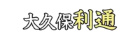 |
としみち |
『大久保利通(おおくぼとしみち)』。幕末から明治前期にかけての日本の政治家。 |
| Lv02_0426 |
|
まぼろし |
実際にはないのに、あるように見えるもの。また、まもなく消えるはかないもの。 |
| Lv02_0427 |
|
けんじゅつ |
武術のひとつ。刀剣を使って戦う術。剣法。剣道。 |
| Lv02_0428 |
|
せいか |
菓子を作ること。 |
| Lv02_0429 |
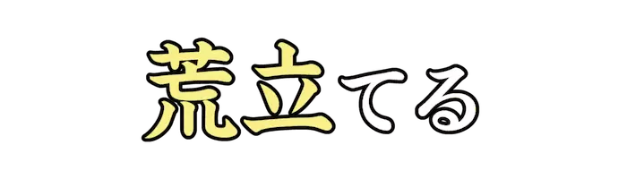 |
あらだ |
荒々しくさせる。物事をもつれさせ面倒にする。 |
| Lv02_0430 |
|
しりぞ |
後方へ下がる。後ろへのく。あとずさる。 |
| Lv02_0431 |
|
ろうきゅうか |
古くなり、役に立たなくなること。 |
| Lv02_0432 |
|
きょてん |
活動の足場となる重要な地点。 |
| Lv02_0433 |
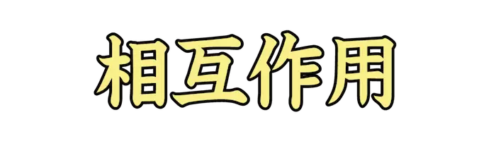 |
そうごさよう |
互いに働きかけ、影響を及ぼすこと。『交互作用(こうごさよう)』とも。 |
| Lv02_0434 |
|
たち |
長大な刀剣の総称。 |
| Lv02_0435 |
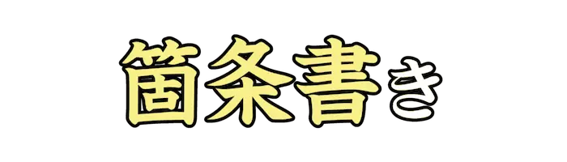 |
かじょうが |
一つ一つの条項に分けて書き並べること。また、そうして書かれたもの。 |
| Lv02_0436 |
|
いんぜん |
表面ではわからないが、陰で強い力を持っているさま。 |
| Lv02_0437 |
 |
けいとう |
かたむき倒れること。また、かたむけ倒すこと。 |
| Lv02_0438 |
|
じこう |
ある物事の中の一つ一つの事柄。 |
| Lv02_0439 |
|
けんじつ |
手堅く確実なこと。確かであぶなげのないこと。 |
| Lv02_0440 |
|
かいむ |
全く存在しないこと。全然ないこと。 |
| Lv02_0441 |
|
ていこう |
外部から加わる力に対して、刃向かうこと。 |
| Lv02_0442 |
|
こうき |
名誉やほまれがある。 |
| Lv02_0443 |
 |
ばんざい |
慶事などにおいて、万歳を三度繰り返し唱えること。 |
| Lv02_0444 |
|
かっきょう |
商売や株式市場などの景気がよく、活気のあるようす。 |
| Lv02_0445 |
|
もくげきしゃ |
ある事柄が起こった場所に居合わせて、それを実際に見た人。 |
| Lv02_0446 |
|
けんとうし |
奈良時代から平安時代にかけて日本が唐に派遣した、公式の使節および使節団。 |
| Lv02_0447 |
|
おうえんか |
競技で、味方の選手、チームを励ますためにうたう歌。 |
| Lv02_0448 |
|
とうこう |
雑誌や新聞などに、公表、公開してもらうために原稿や文章を送ること。 |
| Lv02_0449 |
 |
だっきゃく |
古い考え方や欠点などを捨て去ること。また、よくない状態から抜け出すこと。 |
| Lv02_0450 |
|
はんきょう |
音波が障壁にぶつかって反射し、再び聞こえる現象。 |
| Lv02_0451 |
|
にまめ |
乾燥した豆を水でもどし、味付けして煮たもの。 |
| Lv02_0452 |
|
すいそうがく |
木管、金管楽器を主体とし、打楽器を加えた編成で演奏される音楽。 |
| Lv02_0453 |
|
さわのぼ |
登山で、道のない沢筋を登ること。 |
| Lv02_0454 |
|
ていさい |
外から見た感じ、様子。外見。それらしい形式。 |
| Lv02_0455 |
|
ぎょたく |
釣りで釣った魚の像を、墨や絵の具を使って紙などに転写したもの。 |
| Lv02_0456 |
|
はきゅう |
物事の影響が波のように徐々に広がること。 |
| Lv02_0457 |
 |
かつぜつ |
話すときの発音や、言葉の調子が滑らかであるかどうか。 |
| Lv02_0458 |
|
かんせい |
喜びを抑えきれずに叫ぶ声。歓呼の声。 |
| Lv02_0459 |
|
さみ、さび |
心が満たされず、物足りない気持ちである。 |
| Lv02_0460 |
|
せいめい |
姓名の画数などによって、その人の運勢を判断すること。 |
| Lv02_0461 |
|
にご |
液体、気体などに他の物質がまじりこんで透明でなくなる。 |
| Lv02_0462 |
|
でんどうい |
ある分野で非常に大きな成果や業績などがあること。 |
| Lv02_0463 |
|
かたぐるま |
人を肩や首の辺りにまたがらせて担ぐこと。 |
| Lv02_0464 |
|
しない |
剣道で用いる竹製の刀。 |
| Lv02_0465 |
|
ぜっきょう |
出せるかぎりの声を出して叫ぶこと。 |
| Lv02_0466 |
|
しゅうれい |
他のものより一段とりっぱで美しいこと。 |
| Lv02_0467 |
|
まえぶ |
前もって知らせること。また、事前に通告すること。 |
| Lv02_0468 |
|
ぜんと |
行く先。また、そこから目的地までの道のり。 |
| Lv02_0469 |
|
だいさんじ |
規模の甚だしい、見るに堪えない有様。 |
| Lv02_0470 |
 |
びょうしゃ |
物の形や状態、心に感じたことなどを言葉、絵画などによって写しあらわすこと。 |
| Lv02_0471 |
 |
ふしん |
勢いや成績、業績などがふるわないこと。盛んでないこと。 |
| Lv02_0472 |
|
きょくたん |
普通の程度から大きく外れていること。 |
| Lv02_0473 |
|
にゅうわ |
性質や態度が、ものやわらかであること。 |
| Lv02_0474 |
|
おうぎがた、せんけい |
扇を広げた形。また、弧の両端を通る二つの半径と、その弧とで囲まれた図形。 |
| Lv02_0475 |
|
のうど |
ヨーロッパ封建社会で、領主に従属して生産労働の大半をになった農民。 |
| Lv02_0476 |
|
ゆし |
脂質の一種。天然由来の脂肪酸とグリセリンとのエステル化合物を指す。 |
| Lv02_0477 |
|
はつか |
二十日間。月の二十番目の日。 |
| Lv02_0478 |
|
じきそ |
一定の手続きを経ないで、直接に君主や将軍、天皇などに訴え出ること。 |
| Lv02_0479 |
|
じゅうい |
ヒト以外の動物の医師。 |
| Lv02_0480 |
|
あとくさ、あとぐさ |
物事がすんだあとでもすっきりと解決せず、問題があとを引くこと。 |
| Lv02_0481 |
|
さっとう |
多くの人や物が一度に一か所に押し寄せること。 |
| Lv02_0482 |
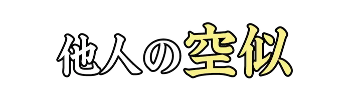 |
そらに |
血筋のつながっていない者が偶然によく似ていること。 |
| Lv02_0483 |
|
じんりょく |
持っている力をすべて注ぎ込むこと。 |
| Lv02_0484 |
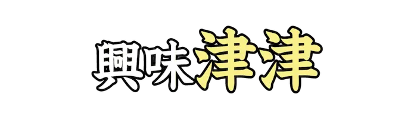 |
しんしん |
おもしろ味や関心が尽きず、次から次へとわいてくるさま。 |
| Lv02_0485 |
|
まいご |
道がわからなくなったり、連れにはぐれたりすること。 |
| Lv02_0486 |
|
しがいせん |
可視光線のスペクトルの紫色部より外側にあって、目には見えない光線。 |
| Lv02_0487 |
|
ちんぴん |
珍しい品物。 |
| Lv02_0488 |
|
しんすい |
水につかること。水が入り込むこと。 |
| Lv02_0489 |
|
しはん |
市場、商店で普通に売ること。 |
| Lv02_0490 |
|
しそく |
『子息(しそく)』の美化語。他人の息子を敬っていう語。 |
| Lv02_0491 |
|
おうりょう |
他人または公共の物を不法に自分の物とすること。 |
| Lv02_0492 |
|
あっしゅく |
圧力をかけて、材料が小さくなるように形状を変化させること。 |
| Lv02_0493 |
|
こ |
人や動物のからだによく肉がついて、太る。からだつきがふっくらとする。 |
| Lv02_0494 |
|
とうと、たっと |
高貴で近寄りがたい。また、自分の推すアイドルやキャラクターが崇高である。 |
| Lv02_0495 |
|
さむらい、さぶらい |
武芸をもって貴族や武家に仕えた者の称。主君や主家のそば近くに仕える者。 |
| Lv02_0496 |
|
きたな |
よごれていて、それに触れたくない気持ちを起こさせるさま。不潔である。 |
| Lv02_0497 |
|
しんさん |
つらい目や苦しい思い。 |
| Lv02_0498 |
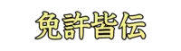 |
めんきょかいでん |
芸道や武道などで、師匠が弟子にその道の奥義を残らず伝授すること。 |
| Lv02_0499 |
|
あなみず |
石川県の能登半島中央に位置する町。南部は七尾北湾、東部は富山湾に面する。 |
| Lv02_0500 |
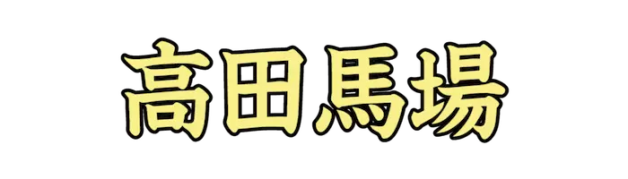 |
たかだのばば |
東京都新宿区北部の町名。江戸時代『高田馬場の決闘』が起こった地。 |
| Lv02_0501 |
|
こんぶ |
コンブ科に属する海藻の一般的な名称。 |
| Lv02_0502 |
|
せつげっか、せつげつか |
雪、月、花という自然の美しい景物を指す語。 |
| Lv02_0503 |
|
ふやじょう |
一面に灯火、ネオンなどがともって昼のように明るくにぎわっている場所。 |
| Lv02_0504 |
|
すいじゃく |
体の働きや、物の勢いなどがおとろえて弱ること。 |
| Lv02_0505 |
|
そうせい |
世界を初めてつくること。また、世界のはじめ。 |
| Lv02_0506 |
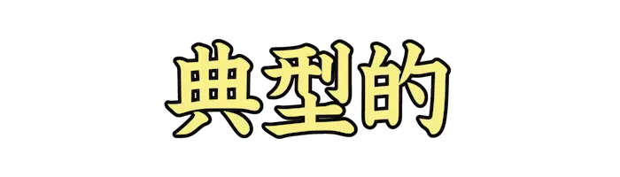 |
てんけいてき |
物事の最も特徴的な性質を示しているさま。 |
| Lv02_0507 |
|
ろてんぶろ |
野外にあって、屋根や囲いを設けない風呂。 |
| Lv02_0508 |
|
あぶらあせ |
じっとりとにじみ出る汗。特に、緊張しているときなどに出る汗。 |
| Lv02_0509 |
|
まいひめ、まいびめ |
舞を舞う女、少女。また、五節の舞に出る少女。 |
| Lv02_0510 |
|
ゆうげん |
奥深くて、はかり知れないこと。趣が深く味わいが尽きないこと。 |
| Lv02_0511 |
|
さいみんじゅつ |
暗示をかけて催眠状態に引き入れる技術。 |
| Lv02_0512 |
|
えんてい |
中国で、夏をつかさどる神。太陽。 |
| Lv02_0513 |
|
きず |
土石などを積み上げてつくる。体制や地位、財産などをしっかりとつくる。 |
| Lv02_0514 |
|
いんがいだん |
国会議員以外の政党員で構成され、議会外で活動を行う集団。 |
| Lv02_0515 |
|
おにび、きか |
沼沢や墓地などで、雨が降った夜や、闇の夜などに燃えて浮遊する青白い燐光。 |
| Lv02_0516 |
|
いんげんまめ |
マメ目マメ科の一年草。日本では北海道が主産地となっている。 |
| Lv02_0517 |
|
みちび |
道案内をする。案内して目的の所に連れていく。 |
| Lv02_0518 |
|
けいこうとう |
照明器具のひとつ。紫外線がガラス管内壁の蛍光体に当てて発光するようにした放電灯。 |
| Lv02_0519 |
|
いど |
こちらから戦いなどをしかける。挑戦する。また、ある対象に立ち向かっていく。 |
| Lv02_0520 |
|
ひややっこ |
豆腐を冷やし、醤油と薬味で食う料理。 |
| Lv02_0521 |
|
ほんもう |
本来の望み。かねがね抱いている志。また、望みを達して喜びを感じること。 |
| Lv02_0522 |
|
あたまきん |
分割払いなどで、最初に支払うある程度まとまった金銭。 |
| Lv02_0523 |
|
だっしめん |
原綿に含まれる不純物や脂肪分を取り去って漂白、精製した綿。 |
| Lv02_0524 |
|
ながちょうば |
長い道のり。また、一つの事柄が一段落するまでに長くかかること。 |
| Lv02_0525 |
|
ちこく |
決められた時刻に遅れること。 |
| Lv02_0526 |
|
てっけん |
堅く握りしめたこぶし。げんこつ。 |
| Lv02_0527 |
|
いちもくさん |
わきめもふらずに一所懸命に駆けるさま。 |
| Lv02_0528 |
 |
おおごしょ |
すでに引退して表面に出ないが、その世界で大きな勢力をもっている人。 |
| Lv02_0529 |
|
ちゅうこく |
まごころをこめて相手の欠点や過ちを、戒めさとすこと。 |
| Lv02_0530 |
|
うらと、うらど |
情報の真偽を確認することを指す表現。また、FPSゲームで敵方の背後に回る行為。 |
| Lv02_0531 |
|
げき |
スラングで、激しく怒っていたり、大変腹立たしい状態のこと。 |
| Lv02_0532 |
|
こうかいしょけい |
見せしめに公表される処刑のこと。転じて、屈辱的な状況に置かれることのたとえ。 |
| Lv02_0533 |
|
どうたん |
俗に、アイドルグループなどで、応援対象が自分と同じ人。 |
| Lv02_0534 |
|
ぬまお |
趣味にめり込み、往々にして時間や金、情熱を惜しげなく注ぎ込むようになること。 |
| Lv02_0535 |
|
こうがい、かおりがい |
芳香剤や洗剤の香りが、頭痛や吐き気などの体調不良、健康被害を招く問題の通称。 |
| Lv02_0536 |
|
のぞ |
取ってなくする。取りのける。除去する。その範囲に加えないようにする。 |
| Lv02_0537 |
|
ふるさと |
生まれ育った土地。『故郷(こきょう)』とも。 |
| Lv02_0538 |
|
ぼうにんげん |
人体を極端にデフォルメし、胴体と手足を棒のように表現した絵、キャラクター。 |
| Lv02_0539 |
|
せいしんせいい |
純粋な真心を持った誠実な態度。嘘や私欲がなく、まことの気持ち。 |
| Lv02_0540 |
|
みなもと |
川の水などの流れ出るもと。また、物事の起こりはじめるもと。 |
| Lv02_0541 |
|
げんせん |
厳重な基準によって選ぶこと。 |
| Lv02_0542 |
|
ばかず |
経験した数。多くの経験。 |
| Lv02_0543 |
|
ひき |
従えて行く。ひきつれて行く。 |
| Lv02_0544 |
|
こころざし |
ある方向を目ざす気持ち。心に思い決めた目的や目標。 |
| Lv02_0545 |
|
ちょしゃ |
書物を書き著した人。著作者。 |
| Lv02_0546 |
|
てんらんかい |
美術品などを陳列して一般に公開する会。 |
| Lv02_0547 |
|
まんさい |
人や荷物をいっぱいにのせること。また、情報などをいっぱい記載すること。 |
| Lv02_0548 |
|
ろくが |
再生を目的として画像をテープやディスク、フィルムなどの媒体に記録すること。 |
| Lv02_0549 |
|
かげえ |
手や切り抜き絵、人形などを、灯火によって壁や障子などに映し出して見せる芸。 |
| Lv02_0550 |
|
くうさつ |
空中から撮影した映像。 |
| Lv02_0551 |
|
あくりょく |
物を握り締める手の力。 |
| Lv02_0552 |
|
えら |
普通よりもすぐれている。また、社会的地位や身分などが高い。 |
| Lv02_0553 |
|
かしお |
菓子を入れた折り箱。主に贈答に用いる。 |
| Lv02_0554 |
|
たが |
双方が同じようなことをしあうさま。また、同じ状態にあるさま。 |
| Lv02_0555 |
|
おそ |
不意に攻めかかる。不意に危害を加える。 |
| Lv02_0556 |
|
めぐ |
周囲をまわる。周囲に沿って進む。また、あちこちまわり歩く。巡回する。 |
| Lv02_0557 |
|
なや |
悩むことがあって苦しい。難儀である。 |
| Lv02_0558 |
|
かぶ、かむ |
頭や顔などにそれを覆うものを載せる。また、同じようなものがそろう。重複する。 |
| Lv02_0559 |
|
ぜんざ |
演芸場で、本格的芸人の前に出る者。特に、落語家の資格の最下級。 |
| Lv02_0560 |
|
もはん |
もっとも適切な答え。 |
| Lv02_0561 |
|
あか |
オンラインサービスで運営からアカウントを削除され、利用を停止されること。 |
| Lv02_0562 |
|
お |
特定の人物やキャラ、作品、などに対して熱心な支持や愛情を示す行為や、その対象。 |
| Lv02_0563 |
|
つ |
物事に対して、もう解決方法や救済方法が見つからない状況を指すネットスラング。 |
| Lv02_0564 |
|
こうぶん |
文の構造。文章の組み立て。 |
| Lv02_0565 |
|
ぎゃくば |
俗に、大勢や時流に逆らう言動をすること。 |
| Lv02_0566 |
|
なんみん |
天災や戦禍などによって、やむをえず住んでいる地を離れた人々。 |
| Lv02_0567 |
|
ほうかい |
腹筋が壊れるのではないかと錯覚するほど大笑いすることを意味する語。 |
| Lv02_0568 |
|
がんじょう |
人や物が丈夫で、弱りそうもないこと。 |
| Lv02_0569 |
|
くさむす |
簡素な小屋を作って住むこと。また、人に先立って事を始めること。 |
| Lv02_0570 |
|
じんつうりき、じんずうりき |
超人的な能力。『通力(つうりき)』とも。 |
| Lv02_0571 |
|
いのちが |
決死の覚悟で物事をすること。 |
| Lv02_0572 |
|
かえん |
火炎を放射して敵を攻撃する兵器。可燃性の液体をガスで噴射させ、点火する。 |
| Lv02_0573 |
|
ずつ |
相撲やけんかなどで、自分の頭で相手の胸などを突くこと。 |
| Lv02_0574 |
|
しんそく |
神わざかと思われるほど速いこと。非常に速いさま。 |
| Lv02_0575 |
|
どろぼう |
他人の物をぬすみ取る者。ぬすびと。盗賊。 |
| Lv02_0576 |
|
こばん |
貴重なものを与えても、本人にとってはその値打ちがわからないことのたとえ。 |
| Lv02_0577 |
|
ふいう |
不意に切りつけたり、攻撃すること。 |
| Lv02_0578 |
|
いば、えば |
威勢を張って偉そうにする。 |
| Lv02_0579 |
|
うた |
音楽的な高低、調子などをつけて発声する。 |
| Lv02_0580 |
|
えんまく |
相手に真意を悟らせないため、ごまかしたりあいまいな言い方をしたりするたとえ。 |
| Lv02_0581 |
|
えんきせい |
塩基のもつ性質。塩基が水素イオンと結合しようとする性質。 |
| Lv02_0582 |
|
さんさんごご |
あちらこちらに家などが小さくかたまって散在しているさま。 |
| Lv02_0583 |
|
てんさい |
著作物を、作者の許可を得ずに別の場所に掲載すること。 |
| Lv02_0584 |
|
いにゅう |
感情を対象の中に投射して、その対象と自己との融合する事実を意識すること。 |
| Lv02_0585 |
|
よゆう |
必要分以上に余りがあること。また、 ゆったりと落ち着いていること。 |
| Lv02_0586 |
|
みやこ |
どのような環境でもそこで暮らすうちに慣れて住みやすくなることのたとえ。 |
| Lv02_0587 |
|
せいりょく |
対立する二大勢力の間にあって、いずれにも属さない第三の中立的勢力。 |
| Lv02_0588 |
|
しりしよく |
自分自身の利益だけを追求する、身勝手な欲望。 |
| Lv02_0589 |
|
ぼうぎょ |
敵の攻撃などを防ぎ守ること。 |
| Lv02_0590 |
|
むちゃくちゃ |
『むちゃ』を強めていう語。筋道が立たず、道理に合わないこと。 |
| Lv02_0591 |
 |
ふ |
足で体重をかけて上から押さえる。足であるものの上にのる。 |
| Lv02_0592 |
|
ぎょかいるい |
魚類および貝類の総称。また、藻類なども含めた水産生物の総称。 |
| Lv02_0593 |
|
こうおつ |
第一と第二のもの。また、二つのものの間の優劣。 |
| Lv02_0594 |
|
せん |
インターネット上で、コンテンツの閲覧者がその提供者に金銭などを寄付すること。 |
| Lv02_0595 |
|
ふうちょう |
時代の移り変わりに伴う世の中のありさま。 |
| Lv02_0596 |
 |
けいこう |
物事の態度など特定の方向にかたむくこと、あるいは、かたむきがちであること。 |
| Lv02_0597 |
|
かたまり |
固まること。また、固まったもの。また、一団となったもの。集団。 |
| Lv02_0598 |
|
てっぺき |
鉄を張った壁や、非常に堅固な城壁。また、非常にかたい守り。 |
| Lv02_0599 |
|
けいそつ |
物事を深く考えずに軽々しく行うこと。 |
| Lv02_0600 |
|
こころえ |
物事の事情や意味をよく理解する。のみこむ。わきまえる。 |
| Lv02_0601 |
|
あなご |
ウナギ目アナゴ科の魚。ウナギによく似た細長い体型をもつ。 |
| Lv02_0602 |
|
おいかわ |
コイ目コイ科の魚。釣りの対象としても人気がある。 |
| Lv02_0603 |
|
おき |
スズキ目アジ科の魚。南日本および太平洋とインド洋の熱帯域にすむ。 |
| Lv02_0604 |
|
ひらめ |
カレイ目ヒラメ科の魚。海底で、両目のある体の左側を上に向けて生活する。 |
| Lv02_0605 |
 |
きはだ、きわだ |
スズキ目サバ科の魚。『黄肌鮪(きはだまぐろ)』とも。 |
| Lv02_0606 |
|
しらうお |
キュウリウオ目シラウオ科の魚。半透明の細長い体をもち、食用にもなる。 |
| Lv02_0607 |
|
とびうお |
ダツ目トビウオ科の魚。水上に飛び出し、海面の辺りを高速で滑空する。 |
| Lv02_0608 |
|
はりせんぼん |
フグ目ハリセンボン科の魚。また、日本固有種のクモガニ科のカニ。 |
| Lv02_0609 |
|
めだか |
ダツ目メダカ科の魚。観賞魚として古くから親しまれている。 |
| Lv02_0610 |
|
さわ |
十脚目サワガニ科のカニ。山間の川などに棲息し、食用とされる。 |
| Lv02_0611 |
|
らいぎょ |
スズキ目タイワンドジョウ科の魚。空気呼吸ができることが特徴とされる。 |
| Lv02_0612 |
|
みちづ |
いっしょに連れだって道を行くこと。また、その相手の人。 |
| Lv02_0613 |
|
ねら、ねらが |
ある事柄を目標としてめざす。また、命中させようと、目標に向け構える。 |
| Lv02_0614 |
|
どげざ |
地面や床にひざまずいて、謝罪の気持ちを表わすこと。 |
| Lv02_0615 |
|
はいすい |
もう逃げ場はないと覚悟した上で、物事に取り組むことのたとえ。 |
| Lv02_0616 |
|
りゅうせいぐん |
毎年ほぼ決まった時期、流星が天球上のある一点から四方に飛び出すように現れる現象。 |
| Lv02_0617 |
|
しんぴ |
人の知恵でははかり知れない、霊妙不思議な秘密。ふつうの理論や認識を超えた事柄。 |
| Lv02_0618 |
|
やこう、やぎょう |
『百期夜行(ひゃっきやこう)』。様々な妖怪が列をなして夜道を歩くこと。 |
| Lv02_0619 |
|
はかまい |
先祖をとむらうために、お墓を掃除したりお供え物を供えたりすること。 |
| Lv02_0620 |
|
いっちょうあ、いっちょあ |
料理の一人前ができあがること。また、用事が片付くこと。勝負に勝つこと。 |
| Lv02_0621 |
|
あぶらむし |
カメムシ目アブラムシ科の昆虫の総称。植物の師管液を吸って生活する。 |
| Lv02_0622 |
|
すずむし |
バッタ目コオロギ科の昆虫。暗い茂みの地表に棲息する。 |
| Lv02_0623 |
|
まつむし |
バッタ目コオロギ科の昆虫。乾き気味の日当たりの良い草地に棲息する。 |
| Lv02_0624 |
|
こんちゅう |
昆虫綱に分類される節足動物の総称。 |
| Lv02_0625 |
|
しおから |
トンボ目トンボ科の昆虫。湿地帯や田畑、市街地でよく見られる。 |
| Lv02_0626 |
|
たまむし |
甲虫目タマムシ科の昆虫。全体に緑色の金属光沢がある。 |
| Lv02_0627 |
|
いもむし |
蝶や蛾の幼虫のうち、毛のないものの総称。 |
| Lv02_0628 |
|
だんごむし |
ワラジムシ目のうち、陸生で刺激を受けると体を丸めるものの呼称。オカダンゴムシ。 |
| Lv02_0629 |
|
たつまき |
積乱雲から垂れ下がった、激しく回転する気柱。トルネード。 |
| Lv02_0630 |
 |
ねっとう、あつゆ |
煮えたっている湯。煮え湯。 |
{kind=link}
{kind=link}
{kind=link}
{kind=link}
{kind=link}
{kind=link}
{kind=link}
{kind=link}
{kind=link}
{kind=link}
{kind=link}
{kind=link}
{kind=link}
{kind=link}
{kind=link}
{kind=link}
{kind=link}
{kind=link}
{kind=link}
{kind=link}
{kind=link}
{kind=link}
{kind=link}
{kind=link}
{kind=link}
{kind=link}
{kind=link}
{kind=link}
{kind=link}
{kind=link}
{kind=link}
{kind=link}
{kind=link}
{kind=link}
{kind=link}
{kind=link}
{kind=link}
{kind=link}
{kind=link}
{kind=link}
{kind=link}
{kind=link}
{kind=link}
{kind=link}
{kind=link}
{kind=link}
{kind=link}
{kind=link}
{kind=link}
{kind=link}
{kind=link}
{kind=link}
{kind=link}
{kind=link}
{kind=link}
{kind=link}
{kind=link}
{kind=link}
{kind=link}
{kind=link}
{kind=link}
{kind=link}
{kind=link}

{kind=link}
{kind=link}
{kind=link}
{kind=link}
{kind=link}
{kind=link}
{kind=link}
{kind=link}
{kind=link}
{kind=link}
{kind=link}
{kind=link}
{kind=link}
{kind=link}
{kind=link}
{kind=link}
{kind=link}
{kind=link}
{kind=link}
{kind=link}
{kind=link}

{kind=link}
{kind=link}
{kind=link}
{kind=link}
{kind=link}
{kind=link}
{kind=link}
{kind=link}
{kind=link}
{kind=link}
{kind=link}
{kind=link}
{kind=link}
{kind=link}
{kind=link}
{kind=link}
{kind=link}
{kind=link}
{kind=link}
{kind=link}
{kind=link}
{kind=link}
{kind=link}
{kind=link}
{kind=link}
{kind=link}
{kind=link}
{kind=link}
{kind=link}
{kind=link}
{kind=link}
{kind=link}

{kind=link}
{kind=link}
{kind=link}
{kind=link}
{kind=link}
{kind=link}

{kind=link}
{kind=link}
{kind=link}
{kind=link}
{kind=link}
{kind=link}
{kind=link}
{kind=link}
{kind=link}
{kind=link}
{kind=link}
{kind=link}
{kind=link}
{kind=link}
{kind=link}
{kind=link}
{kind=link}
{kind=link}
{kind=link}
{kind=link}
{kind=link}
{kind=link}
{kind=link}
{kind=link}
{kind=link}
{kind=link}
{kind=link}
{kind=link}
{kind=link}
{kind=link}
{kind=link}
{kind=link}
{kind=link}
{kind=link}
{kind=link}
{kind=link}
{kind=link}
{kind=link}
{kind=link}
{kind=link}
{kind=link}
{kind=link}
{kind=link}
{kind=link}

{kind=link}

{kind=link}
{kind=link}
{kind=link}
{kind=link}
{kind=link}
{kind=link}
{kind=link}
{kind=link}
{kind=link}
{kind=link}
{kind=link}

{kind=link}
{kind=link}
{kind=link}
{kind=link}
{kind=link}
{kind=link}
{kind=link}
{kind=link}
{kind=link}
{kind=link}
{kind=link}
{kind=link}
{kind=link}
{kind=link}
{kind=link}
{kind=link}
{kind=link}
{kind=link}

{kind=link}

{kind=link}
{kind=link}
{kind=link}
{kind=link}
{kind=link}

{kind=link}
{kind=link}
{kind=link}
{kind=link}
{kind=link}
{kind=link}
{kind=link}
{kind=link}
{kind=link}
{kind=link}

{kind=link}
{kind=link}
{kind=link}
{kind=link}
{kind=link}
{kind=link}
{kind=link}
{kind=link}
{kind=link}
{kind=link}

{kind=link}
{kind=link}
{kind=link}
{kind=link}
{kind=link}
{kind=link}
{kind=link}
{kind=link}
{kind=link}
{kind=link}
{kind=link}
{kind=link}
{kind=link}
{kind=link}
{kind=link}
{kind=link}
{kind=link}
{kind=link}
{kind=link}
{kind=link}
{kind=link}
{kind=link}
{kind=link}
{kind=link}

{kind=link}
{kind=link}
{kind=link}

{kind=link}
{kind=link}
{kind=link}
{kind=link}
{kind=link}
{kind=link}
{kind=link}
{kind=link}
{kind=link}
{kind=link}
{kind=link}
{kind=link}
{kind=link}
{kind=link}
{kind=link}
{kind=link}
{kind=link}
{kind=link}
{kind=link}

{kind=link}
{kind=link}
{kind=link}
{kind=link}
{kind=link}
{kind=link}
{kind=link}
{kind=link}
{kind=link}

{kind=link}
{kind=link}

{kind=link}
{kind=link}
{kind=link}
{kind=link}
{kind=link}
{kind=link}
{kind=link}
{kind=link}
{kind=link}
{kind=link}
{kind=link}

{kind=link}
{kind=link}
{kind=link}
{kind=link}
{kind=link}
{kind=link}
{kind=link}
{kind=link}
{kind=link}
{kind=link}
{kind=link}
{kind=link}
{kind=link}
{kind=link}
{kind=link}
{kind=link}
{kind=link}
{kind=link}
{kind=link}
{kind=link}
{kind=link}
{kind=link}
{kind=link}
{kind=link}
{kind=link}
{kind=link}
{kind=link}
{kind=link}
{kind=link}
{kind=link}
{kind=link}
{kind=link}
{kind=link}
{kind=link}
{kind=link}
{kind=link}
{kind=link}
{kind=link}
{kind=link}
{kind=link}
{kind=link}
{kind=link}
{kind=link}
{kind=link}
{kind=link}

{kind=link}
{kind=link}
{kind=link}
{kind=link}
{kind=link}
{kind=link}
{kind=link}
{kind=link}
{kind=link}
{kind=link}
{kind=link}
{kind=link}

{kind=link}
{kind=link}
{kind=link}
{kind=link}
{kind=link}
{kind=link}
{kind=link}
{kind=link}
{kind=link}
{kind=link}
{kind=link}
{kind=link}
{kind=link}
{kind=link}
{kind=link}
{kind=link}
{kind=link}
{kind=link}
{kind=link}
{kind=link}
{kind=link}
{kind=link}
{kind=link}
{kind=link}
{kind=link}
{kind=link}

{kind=link}
{kind=link}
{kind=link}
{kind=link}
{kind=link}
{kind=link}
{kind=link}
{kind=link}
{kind=link}
{kind=link}
{kind=link}
{kind=link}

{kind=link}
{kind=link}
{kind=link}
{kind=link}
{kind=link}
{kind=link}
{kind=link}
{kind=link}
{kind=link}
{kind=link}
{kind=link}
{kind=link}
{kind=link}
{kind=link}
{kind=link}
{kind=link}
{kind=link}
{kind=link}
{kind=link}
{kind=link}
{kind=link}
{kind=link}
{kind=link}
{kind=link}
{kind=link}
{kind=link}
{kind=link}
{kind=link}
{kind=link}

{kind=link}
{kind=link}
{kind=link}
{kind=link}
{kind=link}

{kind=link}
{kind=link}
{kind=link}
{kind=link}
{kind=link}

{kind=link}
{kind=link}
{kind=link}
{kind=link}
{kind=link}
{kind=link}
{kind=link}

{kind=link}
{kind=link}
{kind=link}
{kind=link}
{kind=link}
{kind=link}
{kind=link}
{kind=link}
{kind=link}
{kind=link}
{kind=link}
{kind=link}


{kind=link}
{kind=link}
{kind=link}
{kind=link}
{kind=link}
{kind=link}
{kind=link}
{kind=link}
{kind=link}
{kind=link}
{kind=link}
{kind=link}
{kind=link}
{kind=link}
{kind=link}
{kind=link}
{kind=link}
{kind=link}
{kind=link}
{kind=link}
{kind=link}
{kind=link}
{kind=link}
{kind=link}
{kind=link}
{kind=link}
{kind=link}
{kind=link}
{kind=link}
{kind=link}
{kind=link}
{kind=link}
{kind=link}
{kind=link}
{kind=link}
{kind=link}
{kind=link}
{kind=link}
{kind=link}
{kind=link}
{kind=link}
{kind=link}
{kind=link}
{kind=link}
{kind=link}
{kind=link}
{kind=link}
{kind=link}
{kind=link}
{kind=link}
{kind=link}
{kind=link}
{kind=link}
{kind=link}
{kind=link}
{kind=link}

{kind=link}
{kind=link}
{kind=link}
{kind=link}
{kind=link}
{kind=link}
{kind=link}
{kind=link}
{kind=link}
{kind=link}
{kind=link}
{kind=link}
{kind=link}
{kind=link}
{kind=link}
{kind=link}
{kind=link}
{kind=link}
{kind=link}
{kind=link}
{kind=link}
{kind=link}
{kind=link}
{kind=link}
{kind=link}
{kind=link}
{kind=link}
{kind=link}
{kind=link}
{kind=link}
{kind=link}
{kind=link}
{kind=link}
{kind=link}
{kind=link}
{kind=link}
{kind=link}
{kind=link}
{kind=link}
{kind=link}
{kind=link}
{kind=link}
{kind=link}
{kind=link}
{kind=link}
{kind=link}
{kind=link}
{kind=link}
{kind=link}
{kind=link}
{kind=link}
{kind=link}
{kind=link}
{kind=link}
{kind=link}
{kind=link}
{kind=link}
{kind=link}
{kind=link}
{kind=link}
{kind=link}
{kind=link}

{kind=link}
{kind=link}
{kind=link}
{kind=link}

{kind=link}
{kind=link}
{kind=link}
{kind=link}
{kind=link}
{kind=link}
{kind=link}
{kind=link}

{kind=link}
{kind=link}
{kind=link}
{kind=link}
{kind=link}
{kind=link}
{kind=link}
{kind=link}
{kind=link}
{kind=link}
{kind=link}
{kind=link}
{kind=link}
{kind=link}
{kind=link}
{kind=link}
{kind=link}
{kind=link}
{kind=link}
{kind=link}
{kind=link}
{kind=link}
{kind=link}
{kind=link}